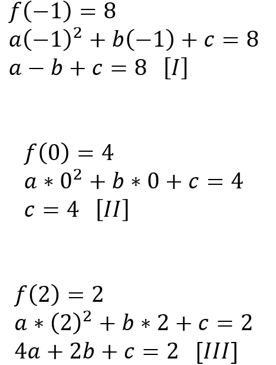

A função quadrática, também chamada de função polinomial de 2º grau, é uma função representada pela seguinte expressão:
Onde a, b e c são números reais e a ≠ 0.
Exemplo
onde, a=2, b=3, c=5
Como resolver uma função quadrática?
Confira abaixo o passo-a-passo por meio um exemplo de resolução da função quadrática:
Exemplo
Determine a, b e c na função quadrática dada por: f(x) = ax2 + bx + c, sendo:
Primeiramente, vamos substituir o x pelos valores de cada função e assim teremos:
Pela segunda função f (0) = 4, já temos o valor de c = 4.
Assim, vamos substituir o valor obtido para c nas equações I e III para determinar as outras incógnitas (a e b):
Já que temos a equação de a pela Equação I, vamos substituir na III para determinar o valor de b:
Por fim, para encontrar o valor de a substituímos os valores de b e c que já foram encontrados. Logo:
Sendo assim, os coeficientes da função quadrática dada são: a=1, b=3-, c=4